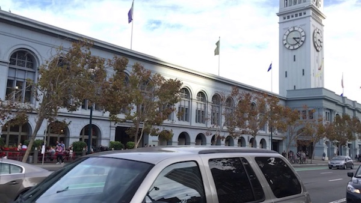

Here is an overview of how ClearShot works. So you can use it to take better shots.
The process is already popular with photographers, ClearShot makes it automatic and portable.
When you press the record button, ClearShot starts taking multiple photos of the scene:
After aligning the images for camera-shake, ClearShot blends the images intelligently by taking median of each pixel. This removes any moving objects between the shots. The output is: